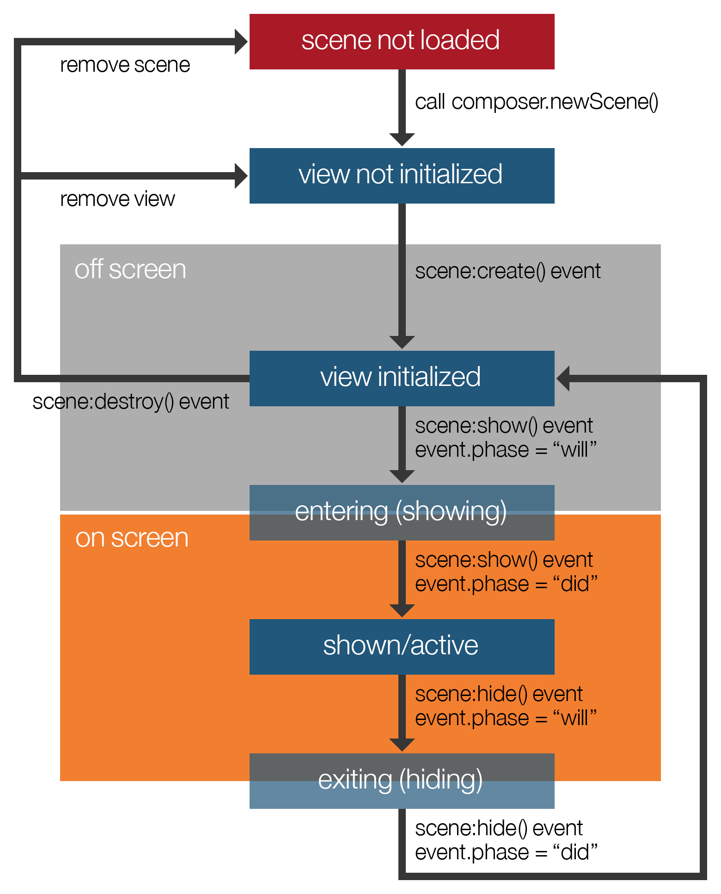

The Composer library is the official scene (screen) creation and management system in Corona. This library provides developers with an easy way to create and transition between individual scenes.
The Composer lifecycle starts within main.lua. However, main.lua itself is not a Composer scene — it is merely used for initialization code, then it launches the first scene via composer.gotoScene(). In this call, specify the name of the scene (file) to be loaded, minus the .lua extension:
local composer = require( "composer" ) -- Code to initialize your app -- Assumes that "scene1.lua" exists and is configured as a Composer scene composer.gotoScene( "scene1" )
Scenes are basically just Lua files, existing as separate .lua files in your project. There is, however, some additional structural setup that you must obey so that Composer can treat them as scenes. This includes two lines to initialize the scene, four listener functions to handle the events that Composer generates, four lines of code to initialize these listener functions, and a basic return to associate the scene with Composer. Please see the sample scene template below.
The scene object itself is created by calling composer.newScene(). This object holds important data for the scene that Composer must access. For the developer, the most important aspect is the scene’s self.view display group — this is the display group to which all of the scene’s visual content should be added.
Remember that you must insert scene display objects into the scene’s self.view group. If you create display objects but do not insert them into this group, they will reside in front of the Composer stage and they will not be regarded as part of the scene. For display objects which should be part of the scene and “managed” by Composer — for example, cleaned up when the scene is removed — you must insert them into the scene’s self.view group, for instance:
function scene:create( event )
-- Assign "self.view" to local variable "sceneGroup" for easy reference
local sceneGroup = self.view
local rect = display.newRect( 160, 240, 200, 200 )
-- Insert rectangle into "sceneGroup"
sceneGroup:insert( rect )
end
Four different life cycle functions handle Composer-generated events:
| Function | Life Cycle Point |
|---|---|
scene:create() |
Occurs when the scene is first created but has not yet appeared on screen. |
scene:show() |
Occurs immediately before and/or immediately after the scene appears on screen. |
scene:hide() |
Occurs immediately before and/or immediately after the scene exits the screen. |
scene:destroy() |
Occurs when the scene is destroyed. |
Once composer.gotoScene() is called, the scene’s life cycle begins and it follows this basic flow:

The scene’s .lua file is loaded and a Composer scene object is created via composer.newScene(). At this point, the scene’s view (self.view) is not initialized.
The scene’s view is initialized and, if the view does not already exist, a create event is dispatched to the scene’s scene:create() function. At this point, the scene still resides “off screen,” so this is an opportune time to create user interface objects and other display objects needed for the scene, including buttons, text, graphics, and other objects that should show when the scene comes on screen.
Immediately before the scene transitions “on screen,” a show event is dispatched to the scene’s scene:show() function with a phase parameter equal to "will". This is a great opportunity to reset variable values or reposition objects that may have moved from their intended starting position since the scene was last shown (like restarting a game level).
Once the scene is fully on screen, another show event is dispatched to the scene:show() function with a phase parameter equal to "did" and this scene is now considered the active scene. This is a good place to start transitions/timers, play scene:create(), and start the physics simulation if you’re using Corona’s physics engine.
If this active scene is exited by going to another scene, for instance, a hide event is dispatched to the scene’s scene:hide() function with a phase parameter equal to "will". This is a great opportunity to pause or stop physics, cancel timers and transitions, and stop scene:show().
Once the scene is fully off screen, another hide event is dispatched to the scene:hide() function with a phase parameter equal to "did". At this point, the scene’s view remains initialized since, by default, Composer keeps hidden/inactive scenes in memory on the assumption that they may be
From this point, if the scene is ever destroyed, either by command or as a result of auto-recycling, a destroy event is dispatched to the scene’s scene:destroy() function. This is when Composer cleans up the scene’s display objects (any display objects that you inserted into the scene’s self.view group or a child group of it). This is also a good time to “undo” things that you did in scene:create() which are not related to the scene’s display objects, for example, dispose of
The following template can be used to create new scene files. Note that this template includes listener functions for all potential events in the scene, but you only need to include listeners for the events that you want to handle.
local composer = require( "composer" )
local scene = composer.newScene()
-- -----------------------------------------------------------------------------------
-- Code outside of the scene event functions below will only be executed ONCE unless
-- the scene is removed entirely (not recycled) via "composer.removeScene()"
-- -----------------------------------------------------------------------------------
-- -----------------------------------------------------------------------------------
-- Scene event functions
-- -----------------------------------------------------------------------------------
-- create()
function scene:create( event )
local sceneGroup = self.view
-- Code here runs when the scene is first created but has not yet appeared on screen
end
-- show()
function scene:show( event )
local sceneGroup = self.view
local phase = event.phase
if ( phase == "will" ) then
-- Code here runs when the scene is still off screen (but is about to come on screen)
elseif ( phase == "did" ) then
-- Code here runs when the scene is entirely on screen
end
end
-- hide()
function scene:hide( event )
local sceneGroup = self.view
local phase = event.phase
if ( phase == "will" ) then
-- Code here runs when the scene is on screen (but is about to go off screen)
elseif ( phase == "did" ) then
-- Code here runs immediately after the scene goes entirely off screen
end
end
-- destroy()
function scene:destroy( event )
local sceneGroup = self.view
-- Code here runs prior to the removal of scene's view
end
-- -----------------------------------------------------------------------------------
-- Scene event function listeners
-- -----------------------------------------------------------------------------------
scene:addEventListener( "create", scene )
scene:addEventListener( "show", scene )
scene:addEventListener( "hide", scene )
scene:addEventListener( "destroy", scene )
-- -----------------------------------------------------------------------------------
return scene
The first line localizes the Composer library for the scene and the next line creates the scene’s view. After this, you should include any
After this are the four functions to handle events generated for the scene. Then, event listeners are declared to handle scene events and, finally, the scene object is returned to Composer.
Note that within the listener functions, self.view is assigned to the local variable sceneGroup for easy reference. If you need to reference the scene’s view outside of these functions, just use scene.view.
Once you create scene .lua files, you need a method to access them. In Composer, this is accomplished via composer.gotoScene():
composer.gotoScene( sceneName )
The sceneName parameter corresponds to the name of the Lua file, without the .lua extension. For example, if you have a scene file named menu.lua, access that scene with:
composer.gotoScene( "menu" )
In addition, there are several parameters which you can optionally pass to composer.gotoScene() to control the transition as well as provide data to the scene. You can do the following:
local options = {
effect = "fade",
time = 500,
params = {
someKey = "someValue",
someOtherKey = 10
}
}
composer.gotoScene( "menu", options )
In this example, the menu.lua scene will transition on screen using a “fade” effect over the span of 500 milliseconds. An optional table of parameters is also passed in. To access this data from the menu.lua scene, access the event.params table in the target scene’s scene:create() or scene:show() function:
function scene:create( event )
local sceneGroup = self.view
local params = event.params
print( params.someKey )
print( params.someOtherKey )
end
Because Composer keeps the current scene’s view in memory by default, the scene:create() function will only be called when the scene is first created. Thus, if you pass a table of parameters and you attempt to access it in the scene:create() function as event.params, it will only be available when the scene is first created.
The following string values are supported for the effect key of the options table:
"fade""crossFade""zoomOutIn""zoomOutInFade""zoomInOut""zoomInOutFade""flip""flipFadeOutIn""zoomOutInRotate""zoomOutInFadeRotate""zoomInOutRotate""zoomInOutFadeRotate""fromRight" — over current scene"fromLeft" — over current scene"fromTop" — over current scene"fromBottom" — over current scene"slideLeft" — pushes current scene off"slideRight" — pushes current scene off"slideDown" — pushes current scene off"slideUp" — pushes current scene offOne key feature of Composer is that, for the most part, it manages display objects automatically, assuming you insert them into the scene’s view group:
function scene:create( event )
-- Assign "self.view" to local variable "sceneGroup" for easy reference
local sceneGroup = self.view
local menuBack = display.newRect( display.contentCenterX, display.contentCenterY, 280, 360 )
-- Insert object into "sceneGroup"
sceneGroup:insert( menuBack )
end
Upon this scene being recycled or removed, Composer will handle the proper disposal of the menuBack object, along with other objects that were inserted into the scene’s view group or a child group of it. Touch, tap, and collision listeners applied to these objects will also be removed.
Just like removing display objects outside of Composer, you’re still responsible for the following when you’re finished with a scene:
By default, when changing scenes, Composer keeps the current scene’s view in memory, which can improve performance if you access the same scenes frequently. If you wish to recycle the current scene when changing to a new scene (remove the current scene’s self.view), you can set the composer.recycleOnSceneChange property to true.
composer.recycleOnSceneChange = true
To revert to the default behavior where scene views are retained (but hidden from view), set the property to false:
composer.recycleOnSceneChange = false
It’s important to understand that neither of these conditions will unload the scene from Lua memory. To explicitly remove a scene from memory, use the composer.removeScene() call. See the next section for details.
If you’re completely finished with scene(s) and don’t intend to access them again, the following functions may be called:
For instance, if you want to remove both the view and the scene object for menu.lua, call:
composer.removeScene( "menu" )
Optionally, you can pass the value of shouldRecycle as true. This will remove the scene’s view from the display hierarchy, but it will remain in Lua memory.
composer.removeScene( "menu", true )
Reloading scenes requires a slightly different approach. Many people want to create and position all of the scene display objects in the scene:create() function. However, if you reload the scene from itself, this function is not called again because the scene’s view still exists. Objects that may have moved (i.e. characters in a game) will remain in place when you reload the scene, and variables defined outside of the listener functions will remain at their current values. For example, if you set a score variable to 0 outside of the listener functions, it will not reset to that value when you reload the scene.
Even if you destroy the scene’s view, certain variables will not reset. While the scene:create() will
The best practice for reloading scenes is to use an intermediate scene. In games, this is often referred to as a “cutscene” and it may show the user a summary of their performance, a menu of options like “replay” and “exit”, etc. Using an intermediary cutscene, you can manually remove the scene that you want to reload, resulting in a fresh start when you load it again. However, you may still need to reset variables and reposition objects in the "will" phase of the scene:show() function.
If you want to skip the cutscene approach, you can reload a scene from itself by calling:
local currScene = composer.getSceneName( "current" ) composer.gotoScene( currScene )
Composer allows you to have one overlay scene. This is a scene that gets loaded on top of the active scene (the parent scene). An overlay scene is constructed like any other Composer scene.
To show an overlay, call it via the composer.showOverlay() function. Because an overlay scene may not cover the entire screen, users may potentially interact with the parent scene underneath. To prevent this, set the isModal parameter to true in the options table. This prevents touch/tap events from passing through the overlay scene to the parent scene.
local options = {
effect = "fade",
time = 500,
isModal = true
}
composer.showOverlay( "inventory", options )
When the overlay is loaded, it behaves exactly like any other scene in regards to its event handling. That is, scene:create(), scene:show(), scene:hide() and scene:destroy() will be called with the same rules as other scenes.
To hide an overlay and return to the parent scene, use the composer.hideOverlay() call, for example:
composer.hideOverlay( "fromBottom", 400 )
This can be called from the overlay scene, from the parent scene, or from some event handler like an Android “back” key handler. Attempting to go to another scene via composer.gotoScene() will automatically hide the overlay as well.
When showing or hiding the overlay, you may need to perform actions in the parent scene. For instance, you may need to gather some input or selection from the overlay and update some aspect of the parent scene. In Composer, the overlay scene has access to the parent’s scene object via event.parent. This allows you to access functions/methods in the parent scene and communicate with the parent when the overlay scene is shown or hidden. For example:
------------------------------------------------------------------------------
-- In "scene1.lua" (parent scene)
------------------------------------------------------------------------------
local composer = require( "composer" )
local scene = composer.newScene()
-- Custom function for resuming the game (from pause state)
function scene:resumeGame()
--code to resume game
end
-- Options table for the overlay scene "pause.lua"
local options = {
isModal = true,
effect = "fade",
time = 400,
params = {
sampleVar = "my sample variable"
}
}
-- By some method (a pause button, for example), show the overlay
composer.showOverlay( "pause", options )
return scene
------------------------------------------------------------------------------
-- In "pause.lua"
------------------------------------------------------------------------------
local composer = require( "composer" )
local scene = composer.newScene()
function scene:hide( event )
local sceneGroup = self.view
local phase = event.phase
local parent = event.parent --reference to the parent scene object
if ( phase == "will" ) then
-- Call the "resumeGame()" function in the parent scene
parent:resumeGame()
end
end
-- By some method (a "resume" button, for example), hide the overlay
composer.hideOverlay( "fade", 400 )
scene:addEventListener( "hide", scene )
return scene
Composer features a few convenience methods and properties to assist with your scene management.
You may store key-value pairs internally within the Composer module which should assist with accessing data between scenes. To set a variable that may be accessed from another Composer scene, use the composer.setVariable() function, for example:
composer.setVariable( "gameLevel", 1 ) composer.setVariable( "playerName", "Zorron" )
Then, to retrieve a variable from another scene:
local playerName = composer.getVariable( "playerName" )
To get the name of a scene, use the composer.getSceneName() function and pass in one of the following string values as the sole required parameter:
"current" — gets the current scene name"previous" — gets the name of the scene which was previously shown"overlay" — gets the name of the overlay scene (if it’s showing)local currScene = composer.getSceneName( "current" ) local prevScene = composer.getSceneName( "previous" ) local overlayScene = composer.getSceneName( "overlay" )
The composer.stage property returns a reference to the
The composer.isDebug property toggles “Composer Debug Mode” which, if set to true, prints useful debugging information to the Corona Simulator Console in certain situations. This should be set to false (default) before building the project for deployment.